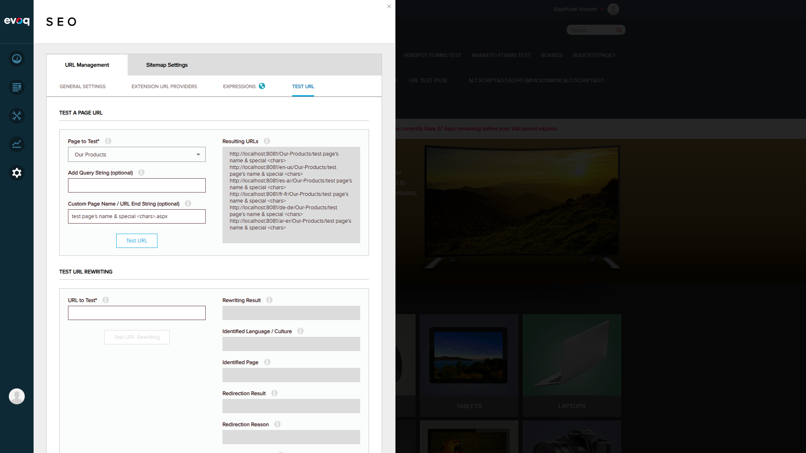

Objective: Verify that URLs are generated for all configured locales
Steps Taken:
Selected various pages
Generated URLs
Verified all locale URLs were generated
Expected Result: URLs should be generated for all 6 configured locales (default, en-us, es-ar, fr-fr, de-de, ar-er)
Actual Result: All 6 locale URLs were generated correctly for each test
Status:PASS
Observation: The site has 5 language variants configured: English (en-us), Spanish (es-ar), French (fr-fr), German (de-de), and Arabic (ar-er), plus the default language URL.
Scenario 5: Verify Admin-Only Access Restriction
Objective: Verify that the Test URL functionality is restricted to administrators
Steps Taken:
Reviewed source code in UrlManagementServiceController.cs
Verified authorization attributes on TestUrl and TestUrlRewriting methods
Confirmed access as SuperUser (host) account
Expected Result: Only administrators should have access to these features
Actual Result: Code review confirms:
[HttpGet]
[DnnAuthorize(StaticRoles = "Administrators")]
public HttpResponseMessage TestUrl(int pageId, string queryString, string customPageName)
[HttpGet]
[DnnAuthorize(StaticRoles = "Administrators")]
public HttpResponseMessage TestUrlRewriting(string uriString)
Both methods have the [DnnAuthorize(StaticRoles = "Administrators")] attribute, restricting access to users with Administrator role only.
Status:PASS (Code Review Verified)
Scenario 6: Test Special Character Handling in Custom Page Names
Objective: Verify how special characters are handled in custom page name parameter
Steps Taken:
Selected "Our Products" page
Entered "test page's name & special <chars>.aspx" in Custom Page Name field
Clicked "Test URL" button
Expected Result: Special characters should be handled appropriately (encoded or sanitized)
Actual Result:
http://localhost:8081/Our-Products/test page's name & special <chars>
http://localhost:8081/en-us/Our-Products/test page's name & special <chars>
...
Status:OBSERVATION
Observation: Special characters (apostrophe, ampersand, angle brackets) are passed through without URL encoding in the display. While this is a display/preview function, actual use of these URLs would require proper URL encoding. The .aspx extension was stripped from the custom page name.
Screenshot:

Scenario 7: Test URL Rewriting Feature
Objective: Verify the URL rewriting test functionality correctly identifies page and culture
Steps Taken:
Entered "http://localhost:8081/en-us/Our-Products" in URL to Test field
Clicked "Test URL Rewriting" button
Reviewed results
Expected Result: Should correctly identify the page, language, and rewriting result
Actual Result:
Field
Value
Rewriting Result
Default.aspx?TabId=22&language=en-US
Identified Language/Culture
en-US
Identified Page
Our Products
Operation Messages
ActiveTab: 22/Our Products IsSecure: False
Status:PASS
Screenshot:
Test Summary
Scenario
Description
Status
1
Test URL generation for existing page
PASS
2
Test with custom page name
PASS
3
Test with query string parameters
PASS
4
Test URL for different locales
PASS
5
Verify admin-only access restriction
PASS
6
Test special character handling
OBSERVATION
7
Test URL Rewriting feature
PASS
Overall Result
6 PASSED | 1 OBSERVATION | 0 FAILED
Observations and Recommendations
Special Character Handling: The custom page name field accepts special characters (apostrophes, ampersands, angle brackets) without URL encoding in the preview. While this is a testing/preview tool, consider adding URL encoding to the displayed results for more accurate representation of actual URLs.
URL Format: Generated URLs correctly follow the DNN friendly URL format with locale prefixes for multi-language sites.
Security: The feature is properly secured with Administrator role requirements via the [DnnAuthorize(StaticRoles = "Administrators")] attribute.